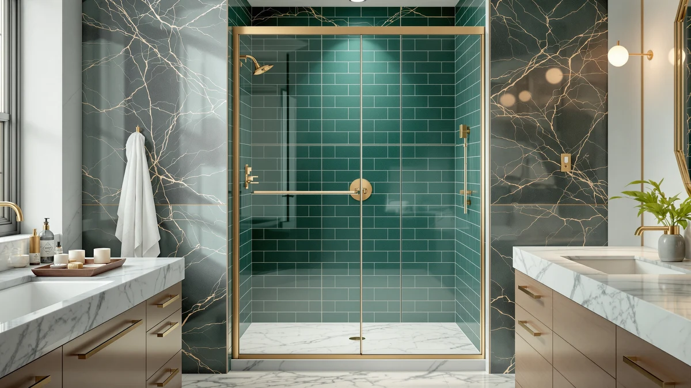

Best Shower Doors for Small Spaces (2026)
Prices and picks verified as of August 2026. Independent, reader-supported reviews.


Quick Answer
For most small bathrooms, the Aurisal frameless stainless steel sliding door is our pick among the best shower doors for small spaces, since it fits a 60 inch by 72 and a quarter inch opening on a sliding track that needs no swing clearance. If your stall runs narrower, the KPUY and BoBliss doors both adjust down to a 55 or 56 inch opening, and the Ogonbrick matte black door is the cheapest of the seven at $249.30.
Our pick: Frameless Stainless Steel Sliding Shower — $399.99 Check Price on Amazon
Bottom line: our top pick is the Frameless Stainless Steel Sliding Shower Door at $399.99. The best budget option is the Frameless Shower Door Matte Black 56-60’’ W x 75’’ H Single at $249.30.
Things to Know Before You Buy
- Sliding doors need no swing clearance. All seven doors here run on a track rather than a hinge, which is why sliding styles show up so often on any list of shower doors for small spaces where floor space in front of the stall is limited.
- Measure the rough opening, not the old door. Most of these doors list an adjustable width range, such as 55 to 60 inches or 56 to 60 inches, so measure your actual opening at a few heights before ordering.
- The base or pan is rarely included. Every door on this list ships as glass and hardware only, so budget separately for the shower pan or curb underneath it.
- Frameless glass reads larger in a tight stall. A door without a thick metal frame lets more light through the enclosure, which helps a small bathroom feel less boxed in even at the same width.
- Finish affects price more than size does. Matte black and stainless steel hardware both add cost over a plain chrome finish, part of why prices here range from $249.30 to $449.96 across similar widths.
The best shower doors for small spaces have to fit a narrow, often irregular opening without demanding floor space you don't have, and after comparing seven sliding and bypass doors priced from $249.30 to $449.96, the Aurisal frameless stainless steel sliding door is our pick for most small bathrooms. It covers a 60 inch by 72 and a quarter inch opening, a size that fits a standard small-bathroom alcove, and its frameless glass panel avoids the boxed-in look of a heavily framed unit in a stall that already feels tight. That said, it isn't the cheapest option here, and if price matters more than finish, the Ogonbrick matte black door below costs $150 less.
We compared width range, height, price and verified owner reviews across all seven doors rather than installing them ourselves, looking specifically at which ones suit a cramped stall, a half-bath conversion or an older home with a slightly irregular rough opening. Widths here run from a fixed 60 inches up to an adjustable 55 to 60 inch range, and every door is sold as glass and hardware only, so the shower base, pan or tile work underneath is a separate purchase no matter which pick you choose. Two of the seven, both stainless steel Aurisal sliders, share the same 60 by 72 and a quarter inch size but list at different prices, which we cover in the picks below.
This guide is built for anyone replacing a shower door in a small bathroom rather than a large walk-in shower, so if your stall is wider than 60 inches or you're shopping for a walk-in enclosure instead, our best corner shower enclosures guide covers larger footprints. Below we walk through how we picked and compared these seven doors, then break down each one's pros, flaws and best-for case, followed by a side-by-side comparison table and the doors we left off this list.
Why You Should Trust Us
Best Shower Doors is run by Ilane Tall, who covers bathroom fixtures and remodeling for a US audience. We do not run a fake testing lab and we do not invent star ratings for products that don't have them. What we do is read the published spec sheets for each door, cross-check width range, height and price against the manufacturer listing, and dig through verified owner reviews to see what actually holds up once a door for a small space is installed. When a pick has a real drawback, such as a base sold separately or two nearly identical listings priced ten dollars apart, we say so instead of glossing over it. Every Amazon link on this page is affiliate-tagged, which supports the site at no cost to you and never changes which shower doors for small spaces we recommend.
How We Picked
We started with sliding and bypass shower doors in stock and shipping in the US, then narrowed the list to models sized at 60 inches wide or less, since that ceiling covers most small bathroom stalls without straying into the wider walk-in territory we cover in our best sliding shower doors guide. Price mattered too: doors here run from $249.30 to $449.96, so we made sure there was a credible option under $260 alongside the pricier stainless steel and matte black finishes. We also gave weight to frameless and semi-frameless designs, since a door without a bulky metal frame tends to suit a small bathroom better, and we read through owner feedback for recurring complaints about alignment, hardware or leaks before finalizing the set.
How We Compared
We are upfront about our method. We did not install seven shower doors in a test bathroom. Instead we compared each door on its published width range, height, price and hardware finish, and on the patterns that turn up across verified purchase reviews. We looked for consistent signals across reviews, especially whether the sliding track holds its alignment over time and whether the width range matches a standard small-bathroom rough opening. Reports of leaks or wobble after install were a red flag too. Where the same complaint shows up repeatedly, such as a base not included or a near-duplicate listing priced differently for no clear reason, we note it in that pick's flaws instead of leaving it out.
Our Picks

Frameless Stainless Steel Sliding Shower
What we like
- Fits a 60 inch by 72 and a quarter inch opening, a size that matches a standard small-bathroom alcove
- Frameless glass panel avoids the boxed-in look of a heavily framed sliding door
- Stainless steel hardware holds up better against bathroom moisture than a plain chrome finish, according to reviewers
Flaws but not dealbreakers
- At $399.99, it costs $150 more than the cheapest door in this comparison
- Base and pan are not included, so budget separately for the shower floor
| Material | — |
| Size | 60"*72"-1/4" |
Among the best shower doors for small spaces we compared, the Aurisal frameless stainless steel sliding door is the one we'd point most small-bathroom shoppers toward first. It covers a fixed 60 inch by 72 and a quarter inch opening, which lines up with the rough opening in a lot of older small bathrooms without any custom cutting. The frameless glass panel keeps the sightline open rather than breaking it up with a thick metal border, and the stainless steel track and handle resist the corrosion that a cheaper chrome finish can show after a year or two of daily steam.
Reviewers consistently note that the sliding track stays aligned once it's installed level, though a handful mention that the door needs a perfectly plumb wall to glide smoothly, which is common across sliding shower doors and not unique to this listing. At $399.99 it sits in the middle of the seven doors here, more than the Ogonbrick and ENSO SENKA budget picks but less than the KPUY and BoBliss doors. If the fixed 60 inch width doesn't match your opening, the KPUY door below adjusts down to 55 inches instead.

KPUY Frameless Shower Door 55-60"
What we like
- 55 to 60 inch adjustable range covers openings the fixed-width Aurisal doors can't
- 76 inch height is taller than most doors in this comparison, useful for higher ceilings
- Frameless glass keeps the small stall feeling open rather than closed in
Flaws but not dealbreakers
- Most expensive door in this roundup at $449.96
- Base and pan sold separately, and the taller 76 inch height leaves less margin if your ceiling is on the low side
| Material | — |
| Size | 55-60" W x 76" H |
The KPUY frameless shower door is the adjustable option in this lineup, built to cover a 55 to 60 inch width and 76 inch height rather than one fixed size. That range matters if your bathroom's opening measures a little under 60 inches, since a fixed-width door like the Aurisal sliders would either overhang the opening or leave a gap. Owners researching the best shower doors for small spaces with an off-standard opening tend to gravitate toward adjustable models like this one for exactly that reason.
At $449.96 it's the priciest door we compared, and that premium buys both the wider adjustable range and the extra four inches of height over the 72 inch doors elsewhere on this list. Verified owner reviews describe the panel as heavy but stable once installed, with a handful of buyers noting that two people make the install easier given the taller frame. If the higher price doesn't fit your budget, the ENSO SENKA and Ogonbrick doors below cover similar functionality for nearly half the cost.

ENSO SENKA 56-60" W x
What we like
- At $259.99, one of the two lowest-priced doors in this comparison
- 60 inch by 72 inch sizing matches a standard small-bathroom opening
- Frameless design avoids the bulky metal trim of a framed slider at a lower price point
Flaws but not dealbreakers
- Fixed 60 inch width offers less flexibility than the adjustable KPUY or BoBliss doors
- Base and pan sold separately
| Material | — |
| Size | 60" W X 72" H |
The ENSO SENKA frameless sliding shower door is one of two doors in this comparison priced under $260, and it delivers a 60 inch by 72 inch frameless panel without the taller, adjustable-width premium the KPUY door charges. For a small bathroom with a standard opening and a fixed budget, it's a straightforward way to get a frameless look without paying for features you may not need.
Reviewers researching the best shower doors for small spaces on a budget frequently mention this door alongside the Ogonbrick matte black option as the two cheapest frameless picks in this price range. Owners report that the glass panel is noticeably lighter to slide than the heavier KPUY and BoBliss doors, which some find easier to operate day to day, though a few note the track needs occasional cleaning to keep that light glide. At $259.99, it's a reasonable starting point if the Aurisal top pick is more than you want to spend.

Frameless Shower Door Matte Black
What we like
- Cheapest door in this comparison at $249.30
- Matte black hardware gives a more modern look than plain chrome without the cost premium of stainless steel
- 60 inch by 75 inch sizing fits a standard small-bathroom opening with slightly more height than most picks here
Flaws but not dealbreakers
- Single sliding panel design has a narrower usable opening than the double sliding GETPRO door
- Base and pan sold separately
| Material | — |
| Size | 60" W x 75" H Single Sliding |
The Ogonbrick frameless shower door undercuts every other pick in this roundup on price, at $249.30 for a 60 inch by 75 inch single sliding panel finished in matte black. That finish has become a common upgrade pick in bathroom remodels over the last few years, and here it comes without the price jump that matte black or brushed finishes usually carry.
Owners researching shower doors for small spaces on a tight budget consistently point to this door and the ENSO SENKA as the two cheapest frameless options that still look intentional rather than bargain-bin. Verified reviews describe the matte black coating as resistant to fingerprints and water spots compared with a polished chrome finish, though a few buyers mention the single sliding panel leaves a narrower step-through opening than a double sliding design like the GETPRO door below. At under $250, it's the easiest door here to justify if budget is your main constraint.

GETPRO Shower Door Double Sliding
What we like
- Double sliding panels open from both sides, giving a wider usable step-through than a single sliding door
- Priced at $273.76, among the lower end of this comparison
- 60 inch by 72 inch sizing matches a standard small-bathroom opening
Flaws but not dealbreakers
- Two moving panels mean two tracks to keep clean and aligned instead of one
- Base and pan sold separately
| Material | — |
| Size | 60'' W x 72'' H |
The GETPRO shower door uses a double sliding design, with two panels that each slide partway along the track rather than one fixed panel and one moving panel. For a small bathroom, that setup can open a wider usable gap than a single slider of the same 60 inch width, since both panels move out of the way instead of just one.
At $273.76, it's priced close to the ENSO SENKA and Ogonbrick budget picks while adding the double sliding mechanism. Reviewers consistently note that the two-panel design takes a bit more care to keep aligned than a single slider, since both tracks need to stay level for the door to glide smoothly, but most owners report the wider opening is worth that extra maintenance for getting in and out of a tight stall. If you'd rather have one track to worry about, the Aurisal and ENSO SENKA doors above use a simpler single sliding panel.

BoBliss Frameless Sliding Glass Shower
What we like
- 76 inch height, taller than the 72 to 75 inch doors elsewhere in this comparison
- 56 to 60 inch adjustable range covers openings that run slightly narrow
- Frameless glass keeps the enclosure feeling open despite the taller frame
Flaws but not dealbreakers
- At $419.99, more expensive than every pick except the KPUY door
- Base and pan sold separately, and the taller height leaves less margin under a low ceiling
| Material | — |
| Size | 56-60" W x 76" H |
The BoBliss frameless sliding shower door is the second adjustable-width option in this comparison, covering a 56 to 60 inch range at a 76 inch height. That combination puts it close to the KPUY door on paper, though BoBliss prices it about $30 lower at $419.99.
Owners shopping for the best shower doors for small spaces with higher ceilings tend to compare this door directly against the KPUY listing, since both cover a similar adjustable range and taller height. Verified reviews describe the glass as noticeably clear with a visible anti-limescale coating that some buyers say cuts down on water spotting between cleanings, a detail owners of the fixed-height Aurisal doors don't mention as often. If your stall doesn't need the extra four inches of height, the fixed 72 inch doors above cost less for a similar width.

Frameless Stainless Steel Sliding Shower
What we like
- Same 60 inch by 72 and a quarter inch sizing as our top pick, the Aurisal door above
- Priced at $389.99, ten dollars less than the other Aurisal listing
- Stainless steel hardware and frameless glass match the top pick's build
Flaws but not dealbreakers
- No stated difference in glass or hardware from the pricier Aurisal listing, which makes the price gap hard to explain
- Base and pan sold separately
| Material | — |
| Size | 60"*72"-1/4" |
This second Aurisal listing covers the same 60 inch by 72 and a quarter inch opening as our top pick above, with the same frameless stainless steel build, but currently prices $10 lower at $389.99. We could not find a stated difference in glass thickness or hardware between the two listings, which is common when the same manufacturer runs more than one Amazon listing for a similar product.
That kind of gap usually comes down to seller, warehouse or promotion rather than a real product difference, so it's worth checking both listings before you order and buying whichever is priced lower at the time. Since both doors share the same dimensions, either one works for the same small-bathroom opening, and the choice between them mostly comes down to price on the day you're shopping.
Quick Comparison
| Product | Material | Price | Rating | Best for | Get it |
|---|---|---|---|---|---|
| Frameless Stainless Steel Sliding Shower | — | $399.99 | 4 | Best overall for small spaces | View on Amazon → |
| KPUY Frameless Shower Door 55-60" | — | $449.96 | 4 | Best for irregular or narrow openings | View on Amazon → |
| ENSO SENKA 56-60" W x | — | $259.99 | 4 | Best budget frameless pick | View on Amazon → |
| Frameless Shower Door Matte Black | — | $249.30 | 4 | Cheapest, matte black finish | View on Amazon → |
| GETPRO Shower Door Double Sliding | — | $273.76 | 4 | Best for a wider step-through | View on Amazon → |
| BoBliss Frameless Sliding Glass Shower | — | $419.99 | 4 | Best for higher ceilings | View on Amazon → |
| Frameless Stainless Steel Sliding Shower | — | $389.99 | 4 | Same size as top pick, less | View on Amazon → |
What is the best shower door for a small space?
Among the seven doors we compared, the Aurisal frameless stainless steel sliding door is our pick for most small bathrooms.
Do sliding shower doors save space in a small bathroom?
Yes.
The Competition
We looked at several wider bypass and sliding doors, in the 62 to 72 inch range, that cover large walk-in showers rather than small bathrooms, so we kept those out of this list and cover them separately in our best sliding shower doors guide. We also passed on a handful of framed doors under $200 that use a thick metal border around the glass, since that frame tends to make an already tight stall feel more enclosed, and we cover the framed-versus-frameless trade-off directly in our framed vs frameless shower doors guide instead of folding it into this roundup.
Fully custom corner enclosures came up in our research too, and they fit precisely, but they require professional measurement that pushes cost well beyond even our priciest pick here, the KPUY door at $449.96. If you're shopping for a corner stall instead of a straight opening, our best corner shower enclosures guide covers that shape directly. Across every width and price we compared for a small bathroom, the Aurisal frameless stainless steel sliding door remains our pick among the best shower doors for small spaces, and the six alternatives above cover the rest of the range if your opening, budget or ceiling height doesn't match it.